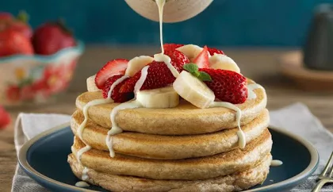

Panqueques

Ingredientes
1 huevo
1 taza de leche
1 taza de harina
1 cucharadita de azucar
1 cucharadita de esencia de vainilla
aceite para la sarten
Preparacion
Mescla todo con batidor hasta queno queden grumos
Deja reposar 5-10 min.
Calenta una sarten engrasada, verte un poco de mescla y gira la sarten para que se esparsa
Cocina 1-2min. por lado
Rellena con dulces, miel, frutas o chocolate
Hecho por:
Ruel Garcia Flores👌